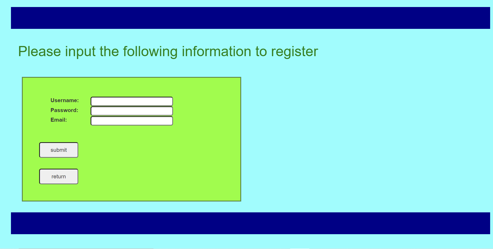
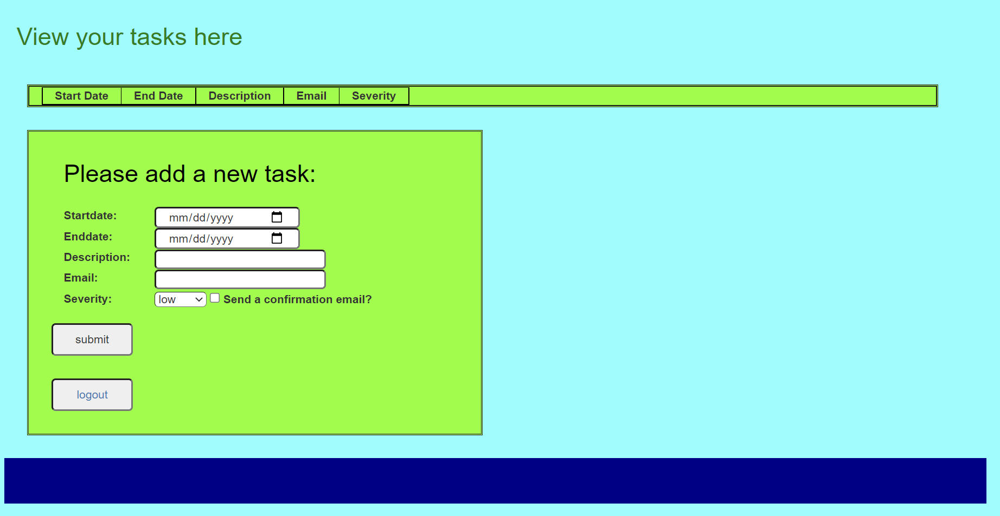
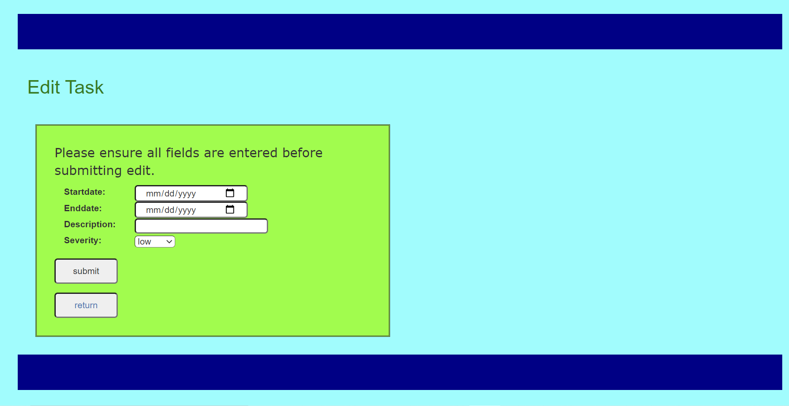

The following appliaction is a reflection of understanding in the Java Full Stack set up. It uses Spring Boot MVC design to create a to-do list that allows the user to log in with security and save the login credentials. It uses MySQL for a back-end database to store the user information and the task they have assigned to themseles.
The application takes advantage of Hibernate to handle all the ORM of the tasks and users onto classic POJOs. The front-end is served with jsp's and gets stylized with CSS. Inline Javascript gets used to handle transferring tasks and user information from jsp to jsp, or jsp to controllers.
The Initial Page
The inital login page is set up is simple. Sign in or register. The registration page and login page is secure using Spring Security.
The Registration Page
The first step the user must do is register their account. Its as simple as clicking register. This will route to the display registration page. The steps are simple, username password and an email account. The user cannot register if the username has been taken. The advantage here is that multiple accounts can then be linked to the same email address. Additionally this registration is followed by sending a confirmation email to the email address provided.
The Task Page
The task page is designed to be minimalistic. It uses a single controller that determines all the back-end work. This is true for the edit-task operations and the add-task operation. The task cannot be added unless all the information is filled out. This is to ensure database integrity.
The other iportant asect of this application is that the user as well as any tasks that get assigned form the user, can send confirmation emails to ensure communication is met. If the checkbox is clicked on creation of the email, then an email will be sent to both parties.
Submitting your task
Once you have submitted the tasks, they appear in a table above. The option then appears to be able to complete (delete), or to edit the task.

Editing your task
The editor is connected to the task entry id, which is hidden from the user. the task page will not sublit any information unless the field is altered. Additionally the severity field has an additional option which is 'no change' to accomodate no alteration on the selector.
Summary Of Code
All code for the task manager can be found on my github link below.